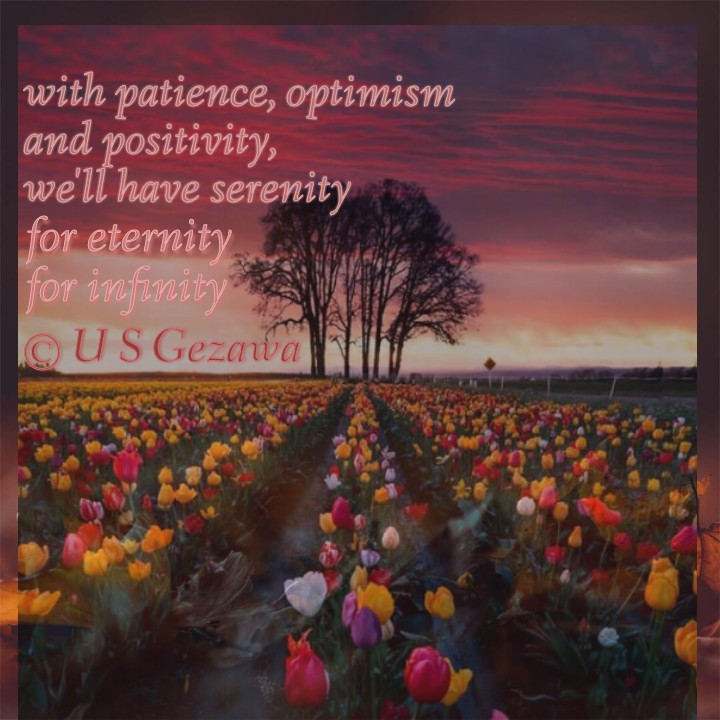

I am a Software developer , Student, Machine Learning Amateur & a part-time Poet. I like volunteering and advocate for community growth.
Working with a team of like-minded friends, building tech-based solutions to clients and also working on different open-source projects solving problems for our local communities.
As a student intern, I worked with the Software Developers, building solutions for clients. Documenting the progress of the BC-Scan project and designing its early prototype.
"DSC Leads are community organizers. Like Googlers, we are leaders who believe that technology can do extraordinary things for the world. We have taken the responsibility to impact students, empower and encourage them to impact their communities. Through this experience, we will not only be leaving a legacy of impact, but also grow as individuals and meaningful contributors to the greater developer ecosystem."
As a member of the core team, I am saddled with the responsibility of technical writing. And I am also involved in the Algorithms sub-unit.
Aside being a developer, I spend my leisure time outdoors to read books and watch the clouds.
Also, I write poems. Have a look here
Furthermore, I am a Mathemaphile (lover of mathematics)